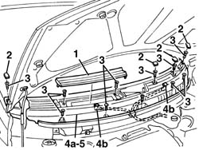

7210E22 WINDSCREEN BASE TRIM
- Path
- Procedures > 72 PANELS AND FRAME > 7210 REMOVING REFITTING > 7210E EXTERNAL PARTS > 7210E22 WINDSCREEN BASE TRIM
- Kind
- repair procedure (removal / refitting; the operation number is the code)
- Applies to
- all engines; production: da 06/04
- Interactive page
- https://sloeber94.github.io/elrnDB-fMltpl/en/#/186003598
Applies to: all engines; production: da 06/04
 Removing
Removing
 Refitting
Refitting- Release the air filter cover.
- Release the covers.
- Undo the bolts.
- Move the trim (4a) and disconnect the screen washer jet pipes (4b).
- Keep the windscreen base trim.

Applies to: all engines; production: da 06/04
Refitting
Removing- Check that the trim is not damaged.
- Connect the pipes to the screen washer jets.
- Position the trim and secure it using the bolts.
- Fit the covers.
- Positionthe air filter cover attaching the retainers.
- Op. 5050B32 WINDSCREEN WIPER ARM/S - R+R
- Check that the trim is correctly aligned and check that the windscreen wipers and the windscreen washer jets are working.